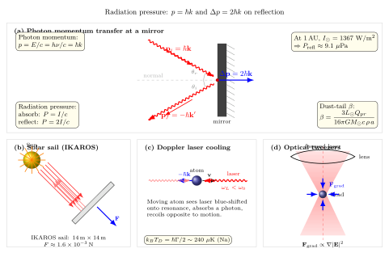

光竟然有动量?
前一节我们刚刚把"光速"拆成相速度与群速度两个概念, 看清了所谓"光的速度"其实是一面多棱镜. 现在让我们更进一步, 问一个听起来有点傻但极为深刻的问题: 一束从太阳射出的光, 能不能推动物体? 如果能, 推力有多大? 这与它"没有静止质量"这个事实是否矛盾?
日常经验似乎告诉我们光不能推人: 我们走到阳台上晒太阳, 感觉到的只有热, 从没感到被谁轻轻往后按一下. 然而物理学不止一次地告诉我们, 日常经验只是一个窗口太窄的实验. 扭转天平、彗星的尾巴、深空中的太阳帆、实验室里被冷却到接近绝对零度的原子云, 它们背后都是同一个事实: 光携带动量, 辐射压虽小, 但真实存在.
一、从 Maxwell 场到动量密度
先放下光子图像, 回到经典电磁学的路子. 电磁场不仅携带能量, 也携带动量. 这件事可以从 Lorentz 力对一个带电体系做的功与推的力对比出发, 但最干净的做法是引入 Maxwell 应力张量 $T_{ij}$ 与动量密度 $\mathbf{g}$:
$$ \mathbf{g} = \varepsilon_0\, \mathbf{E} \times \mathbf{B} = \frac{\mathbf{S}}{c^2}, \qquad \mathbf{S} = \frac{1}{\mu_0}\mathbf{E} \times \mathbf{B}. \tag{1} $$
这里 $\mathbf{S}$ 就是 Poynting 矢量, 给出单位时间通过单位面积的能流. 公式 (1) 告诉我们一个惊人的结果: 场中动量密度 $\mathbf{g}$ 与能流 $\mathbf{S}$ 指向一致, 大小相差一个 $1/c^2$. 这个 $1/c^2$ 不是偶然的, 它恰好是狭义相对论里 $E = mc^2$ 的倒影: 能量与动量之比为 $c$ 的东西, 正是光.
现在考虑一束平行光以强度 $I$ (单位 $\mathrm{W/m^2}$) 垂直照到某个表面上. 这束光在每单位面积、每单位时间内带来的动量为 $I/c$. 如果这面是完全吸收的黑体, 那么它吞下全部动量, 感受到的压强为:
$$ P_\text{吸收} = \frac{I}{c}. \tag{2} $$
如果这面是完美反射的镜子, 入射光子动量反向, 动量改变量是 $2 \cdot I/c$, 于是压强是吸收情形的两倍:
$$ P_\text{反射} = \frac{2I}{c}. \tag{3} $$
这里我们已经做了一次极限检验: 完全吸收给出 1 倍, 完美反射给出 2 倍, 现实的灰色表面必然落在这两个极限之间 — 任何辐射压问题的系数必须位于 $[1, 2]$ 这个区间, 这是无法越过的上下界. 更一般地, 若反射率为 $R$, 压强为 $P = (1 + R) I / c$, 两端极限就是 (2) 和 (3).

二、光子图像: 每一份 $\hbar k$ 的动量
把经典的连续波换成量子的光子, 结论不变, 但更直观. 一个频率为 $\nu$ 的光子携带能量 $E = h\nu$. 由 $E = pc$ (因为光子没有静质量), 其动量为:
$$ p = \frac{E}{c} = \frac{h\nu}{c} = \hbar k, $$
其中 $k = 2\pi/\lambda$ 是波数. 当这光子被镜面反射时, 它的动量从 $+\hbar k$ 变成 $-\hbar k$, 改变量 $\Delta p = 2\hbar k$ 被镜子吸走. 这就是宏观上所谓"辐射压是反射情形 2 倍"的微观来源.
代入一个 532 nm (绿色) 激光光子的数字看看. 它的动量大小是:
$$ p = \frac{h}{\lambda} = \frac{6.63 \times 10^{-34}}{5.32 \times 10^{-7}} \approx 1.25 \times 10^{-27}~\mathrm{kg\cdot m/s}. $$
这小得不可想象 — 对比一个氢原子的热运动在室温的典型动量约 $10^{-24}~\mathrm{kg\cdot m/s}$, 单个光子只是它的千分之一. 但大量光子协同起来就不一样了: 一束 1 W 的可见光每秒发射约 $10^{18}$ 个光子. 每秒动量之和量级在纳牛顿级, 累积效应很可观.
这里有一个看似诡异的问题: 动量守恒要求光子被发射时, 光源也要后坐. 确实如此 — 一个原子自发辐射一颗光子, 自己会获得 $\hbar k$ 的反冲动量. 对应的反冲速度 $v_r = \hbar k / m$ 对钠原子约为 3 cm/s, 这正是激光冷却里"反冲极限温度"的起点, 我们在第四节还要用到.
三、阳光下的数字: 太阳常数与 IKAROS 太阳帆
现在让我们走出实验室, 代一次真正宏大的数字. 在地球轨道 (1 AU) 处, 太阳照射的平均强度 — 也就是著名的太阳常数 — 约为:
$$ I_\odot = 1367~\mathrm{W/m^2}. $$
由公式 (2), 这束阳光对完全吸收的黑体表面产生的压强为:
$$ P_\text{吸收} = \frac{I_\odot}{c} = \frac{1367}{3.00\times 10^{8}} \approx 4.56 \times 10^{-6}~\mathrm{Pa} \approx 4.6~\mathrm{\mu Pa}. $$
对完美反射的镜面, 由 (3) 加倍到约 $9.1~\mathrm{\mu Pa}$. 把这个数和大气压 $10^5~\mathrm{Pa}$ 比一比, 小了 $10^{-10}$ 倍. 难怪我们在阳台上感觉不到被推 — 你的身体承受的太阳辐射压还不如一只蚊子撞过来的冲量. 然而在深空, 没有大气阻力, 没有摩擦, 这区区 $10~\mathrm{\mu Pa}$ 却足以驱动飞船.
这就是太阳帆的原理. 2010 年, 日本 JAXA 发射了世界上第一个成功的星际太阳帆 IKAROS, 帆面为 14 m × 14 m (约 196 m²) 的聚酰亚胺薄膜, 总质量约 307 kg. 让我们算一下它在金星轨道内侧获得的加速度. 假设反射率 $R \approx 0.8$, 帆面垂直对日, 总光压力:
$$ F = (1 + R)\, \frac{I_\odot}{c}\, A \approx 1.8 \times 4.56\times 10^{-6} \times 196 \approx 1.6 \times 10^{-3}~\mathrm{N}. $$
加速度 $a = F/m \approx 1.6 \times 10^{-3}/307 \approx 5 \times 10^{-6}~\mathrm{m/s^2}$, 即 5 μg. 看起来几乎可忽略, 但持续几个月的累积是可观的: 简单积分给出 $\Delta v = at$, 半年 $(1.5 \times 10^{7}~\mathrm{s})$ 下来速度增量约 75 m/s. 太阳帆不需要燃料, 只要阳光还在就能持续加速 — 这对深空任务是巨大诱惑.
太阳帆还揭示了一个漂亮的标度定律: 辐射压力与 $1/r^2$ 衰减, 而太阳引力同样 $1/r^2$ 衰减, 它们的比值 $\beta$ 与日心距无关:
$$ \beta = \frac{F_\mathrm{rad}}{F_\mathrm{grav}} = \frac{3 L_\odot Q_{pr}}{16\pi\, G M_\odot\, c\, \rho\, a}. $$
其中 $a$ 是尘埃颗粒半径, $\rho$ 是密度, $Q_{pr}$ 是辐射压效率系数. 这就是为什么彗星尘埃尾总是背离太阳的方向 — 对足够小的尘粒 (微米级) $\beta \gt 1$, 辐射压胜过引力, 把尘埃像吹烟一样吹向外太阳系. 彗尾是裸眼就能看到的辐射压证据, 尽管人类直到 Maxwell 给出理论、Lebedev 做完实验, 才明白这件事.
四、操控微观世界: 激光冷却与光镊
如果说太阳帆是辐射压的宏大应用, 那么激光冷却和光镊则是辐射压的精微应用 — 它们在微观尺度上几乎改写了原子物理和生物物理的面貌.
Doppler 冷却. 1975 年 Hänsch 和 Schawlow 提出一个极其优雅的想法: 把激光调到原子某吸收线的红方 (频率略低于共振). 静止的原子不怎么吸收, 但如果原子迎着激光飞, 由于 Doppler 效应, 它看到的激光频率被蓝移, 正好落在共振峰上, 于是猛烈吸收光子、获得反向反冲, 速度变慢. 反过来, 若原子顺着激光飞, 激光频率被进一步红移, 离共振更远, 不怎么吸收. 结果: 无论原子朝哪个方向运动, 都受到一个阻尼的、减速的力. 六束对向的激光交汇, 就形成一个三维"光学粘胶", 原子云像浸在糖浆里一样慢下来.
这个机制能冷到多低? Doppler 极限温度由"吸收反冲降温"与"自发辐射随机热化"的平衡给出:
$$ k_B T_D = \frac{\hbar \Gamma}{2}, $$
其中 $\Gamma$ 是共振线的自然线宽. 对钠原子的 D 线, $\Gamma \approx 2\pi \times 10~\mathrm{MHz}$, 对应 $T_D \approx 240~\mathrm{\mu K}$. 实验中通过 Sisyphus 冷却、偏振梯度冷却等更巧妙的机制, 可以进一步冷到微 K 乃至纳 K 量级, 最终做出 Bose-Einstein 凝聚. 1997 年诺贝尔物理学奖授予了 Steven Chu、Claude Cohen-Tannoudji 和 William Phillips, 正是表彰"发展用激光冷却和捕获原子的方法".
光镊. 更早, 1970 年 Arthur Ashkin 在贝尔实验室发现, 聚焦激光束不仅能"推"小球, 还能"抓"住它. 关键是梯度力: 在一个高斯光束的焦点附近, 电场强度不均匀, 电介质微粒 (如微米级聚苯乙烯球) 被感应极化, 感受到指向光强最大处的梯度力 $\mathbf{F}_\mathrm{grad} \propto \nabla |\mathbf{E}|^2$. 如果这个指向里的力足以抵消散射力 (即把它往光传播方向推), 粒子就被稳稳地困在焦点上, 像被一把看不见的镊子夹住.
光镊不仅能操纵尘埃颗粒, 还能抓活细胞、捕获单个病毒、甚至拉扯 DNA 分子测量其弹性. 这使它成为分子生物学不可或缺的工具. 2018 年诺贝尔物理学奖把一半颁给 Ashkin, 表彰"光镊及其在生物系统中的应用". 这里有一个美妙的反讽: 辐射压在 19 世纪末是"光压"这种微不足道的小概念, 到 21 世纪反而成为操纵生命分子的精确手柄.
五、Maxwell 的预言与 Lebedev 的扭转天平
历史是最后一道拼图. Maxwell 在 1873 年出版的《电磁通论》里, 就已经从他的电磁理论推导出: 光在吸收体上应该施加等于其能量密度的压强. 他写道: "在一平方英尺的表面上, 直射日光所产生的压强大约是 $0.882 \times 10^{-3}$ 格令". 这是一个纯粹的理论预言, 因为当时没有人能测到这么微小的力.
二十八年后, 1901 年, 俄国物理学家 Pyotr N. Lebedev 在莫斯科大学用一台极其精巧的扭转天平做到了. 他把轻巧的金属片悬挂在石英细丝上, 装在高度真空的玻璃容器里 (为了排除空气对流 — 因为表面温差导致的辐射计效应要远大于真正的辐射压, 这正是著名的 Crookes 辐射计为什么看起来转反了的原因), 用强电弧光源照射并精心扣除各种背景. 他测到的光压与 Maxwell 的预言在 20% 以内符合 — 在那个时代, 这已是极大的胜利. Nichols 和 Hull 在美国 1903 年独立做出了更精确的测量. 从那一刻起, "光有动量"便从理论假说变为实验事实.
一个时代概括: 17 世纪 Kepler 看见彗尾远离太阳, 猜是"太阳风". 1873 年 Maxwell 从方程里算出了它的真实来源. 1901 年 Lebedev 把它称到了秤上. 1923 年 Compton 用 X 射线散射再次验证了光子的动量. 1997 年朱棣文等用它冷却了原子. 2010 年 IKAROS 用它在深空航行. 2018 年 Ashkin 用它抓住了细胞. 一条线索, 一个半世纪, 从"光竟然有动量吗"到"光可以做一切动量能做的事情".
小结
光没有静止质量, 却携带动量. 这一事实可以由 Maxwell 场的动量密度 $\mathbf{g} = \mathbf{S}/c^2$ 导出, 也可以由光子 $p = \hbar k$ 直接读出, 两条路给出同样的辐射压公式: 吸收 $P = I/c$, 反射 $P = 2I/c$. 代入太阳常数, 我们得到深空中一枚"光之指尖"的真实尺寸 — 约 $10~\mathrm{\mu Pa}$, 是大气压的 $10^{-10}$. 这枚指尖太小, 以至日常生活察觉不到, 但它恰好足以推动 IKAROS 的薄膜帆、剥离彗星表面微米级尘埃、把原子云按进微 Kelvin 的囚笼、把病毒夹在激光焦点上. 回到本书的大问题"光是什么?" — 从这一节起我们看到: 光不仅仅是信号、是能量、是波, 它还是可以直接与物质交换动量的动力学对象. 下一节我们把视野再一次放大, 问: 这束阳光一秒钟究竟往地球送来了多少能量? 太阳常数是如何测的, 又藏着什么关于恒星与宇宙的秘密?
▲